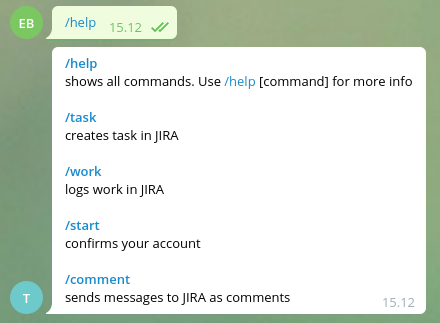

Why do we need a bot?
Bot manages all chats created from Jira.
/help
This command displays all commands the bot has to offer. /help [command] can display deeper information
/start
This command is used to connect your JIRA and Telegram accounts. Works only in private chat with bot.
/comment
You can reply with this command to send replied message to JIRA or you can use it inline like this: /comment some important text.
In order to detect replies, bot must have admin rights in current group. Works only in issue chats.
/task
This command is used to create tasks directly from telegram chat. You can use this command only in private chat with bot.
Bot will ask you for all required fields, which are needed for task creation
/work <issue-key>
You can log your work with this command only in private chat with bot. You should pass an issue key as an argument for this command (e.g. /work ISSUE-1).

If you try to use wrong command or the command syntax is invalid the bot will say so.
Also, if you would like to have command suggestions while typing, you have to add commands to your bot via BotFather by yourself.